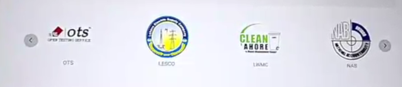
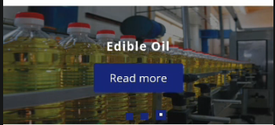
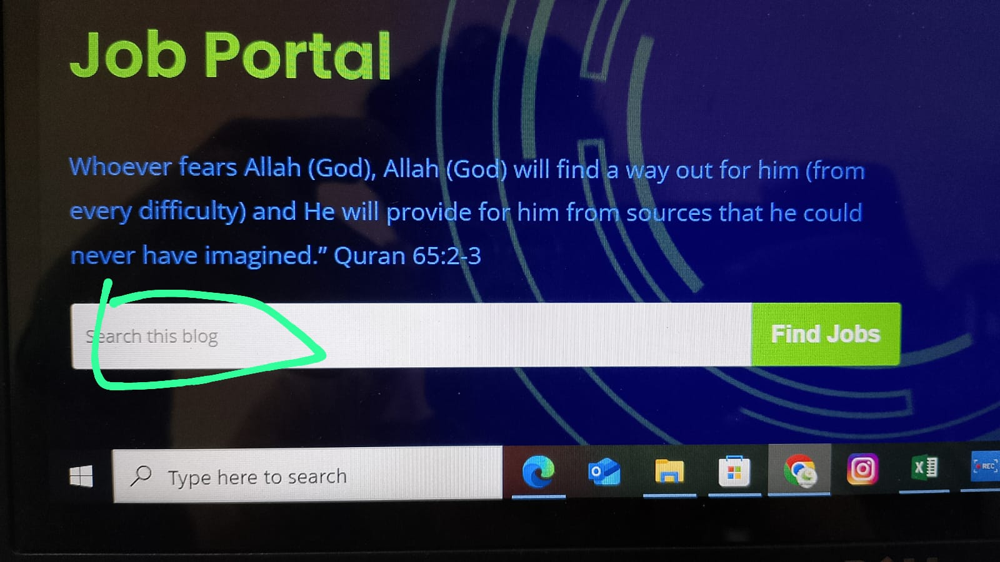
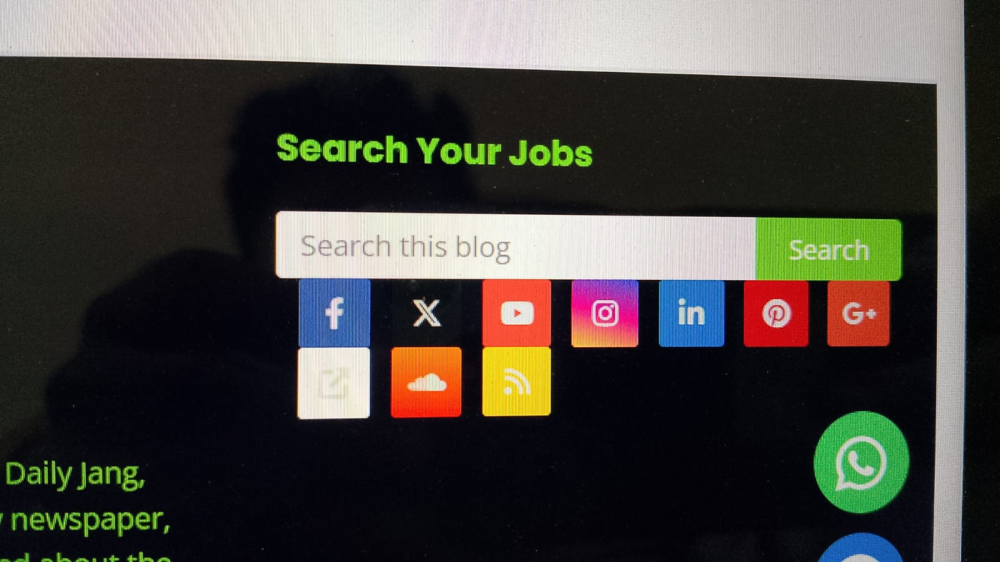
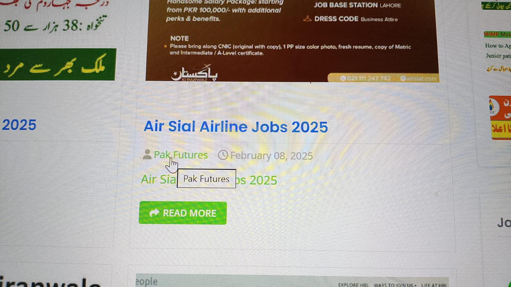

Need picture slider like this:

Change slider to:

Change text to Find Best Opportunity

Colourful background is not nice. Need to change to black and white:

Remove user profile link (icon and text both):

Checks if a section is missing in post:
Note:
This section is TBD (to-be-determined) yet.